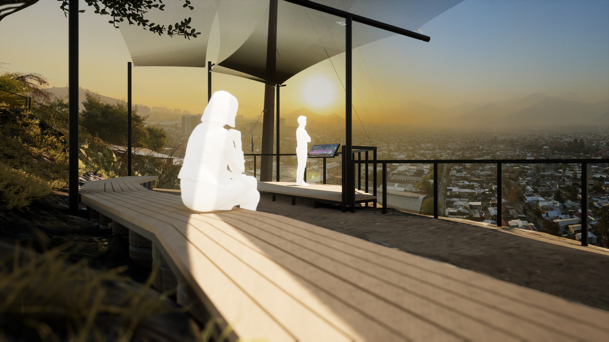
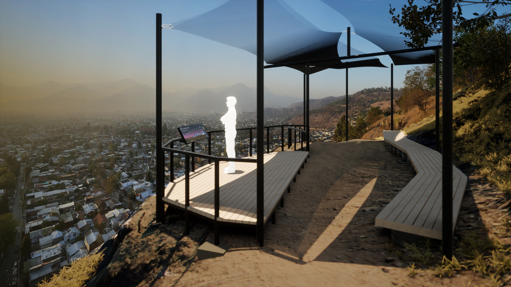
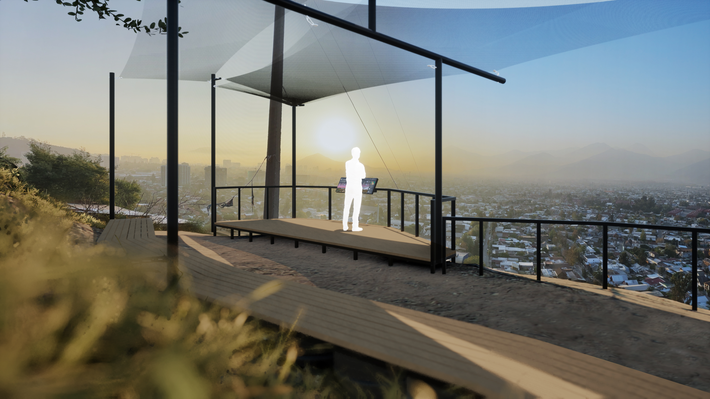
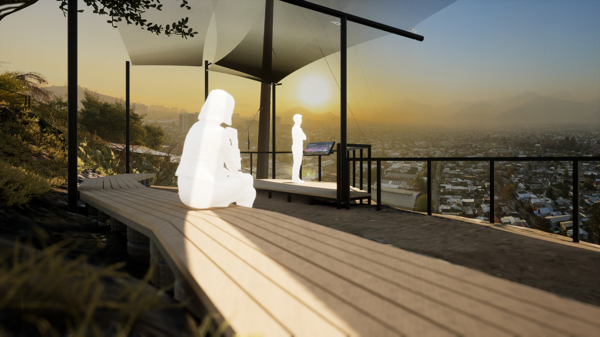
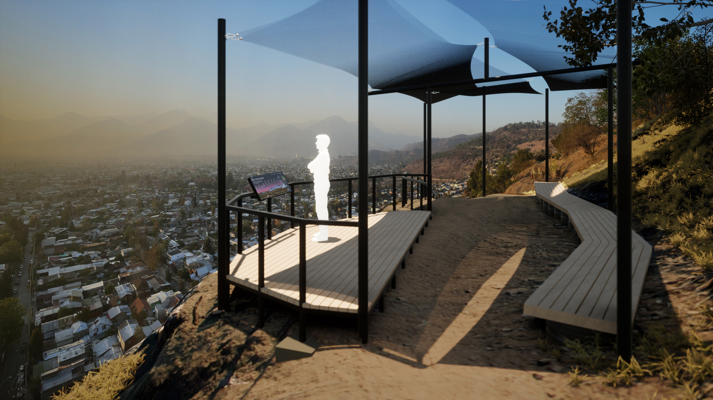
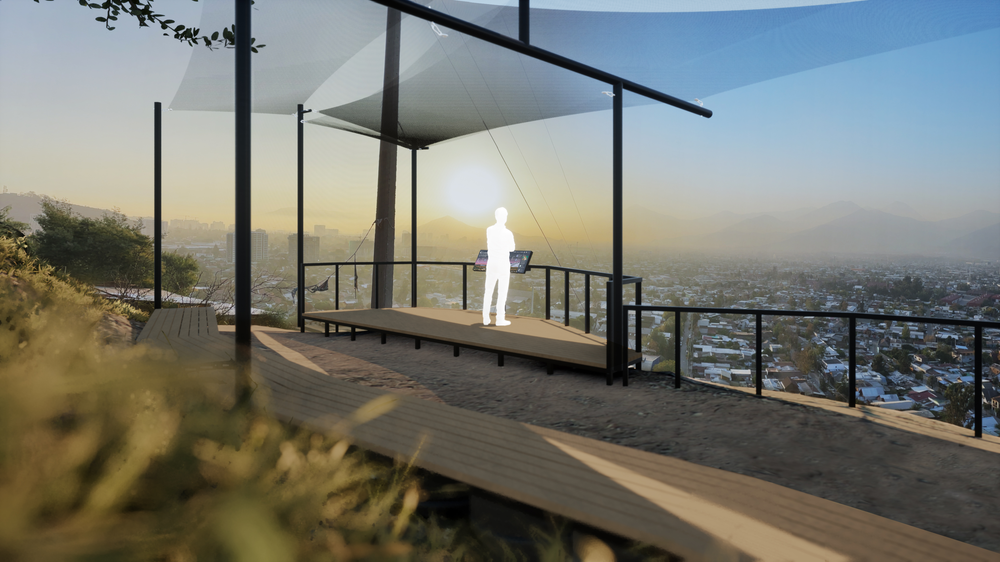

PROYECTO WINKELHUE
Taller territorio y paisaje / 2022
En compañía del Parquemet y la Universidad Diego Portales
se busca crear un espacio de recreación y actividades por
medio del Sector Purrun.
Se proporcionaron especificaciones y peticiones las cuales
mencionan:
Uso de neumáticos reciclados para contención y escaleras.
Madera para tarimas y asientos.
Estructura de sombra útil para la posición del sol en
cuanto al terreno.
Una baranda de seguridad con las dimensiones estipuladas
en proyectos pasados.
Teniendo estos aspectos en cuenta se solicitaba una zona
de talleres y de reunión con vista panorámica hacia los
cerros, que tuviera distintas funciones tales como clases de
yoga, conciertos, talleres , y un espacio de contemplación.


 




